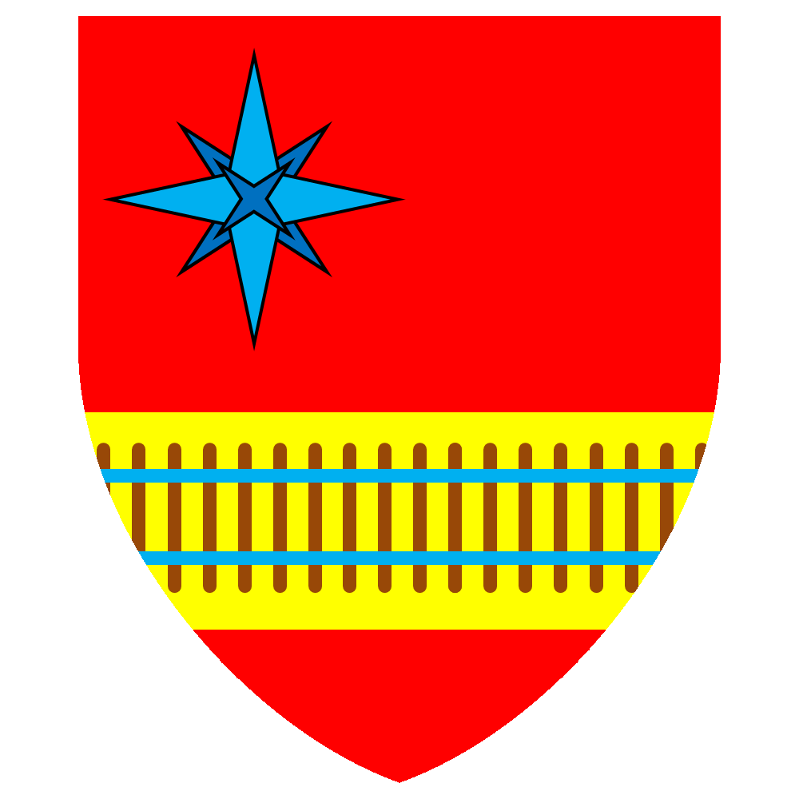

| První zmínky o naší
obci pochází již z první poloviny 12. století a to v textu staré
kramářské písně, „…Josef z Dolní Jalovice, koupil čtyři makovice...“. Nejstarší stavbou je Bouchalův statek, který patřil ještě v první polovině dvacáteho století rodu Rispaldiců. Rod Rispaldiců byl celá staletí poměrně chudý. Ke změně došlo až v roce 1725, když se Herbert von Rispaldic oženil s Bernadett von Binder. Spojení se starou švýcarskou rodinou přineslo Rispaldicům značné jmění. Neuvážené investice však přivedly rod Rispaldiců v polovině 20. století téměř k úpadku. Erb Rispaldiců se stal znakem naší obce. |
 |
Trochu historie
Trochu historie...